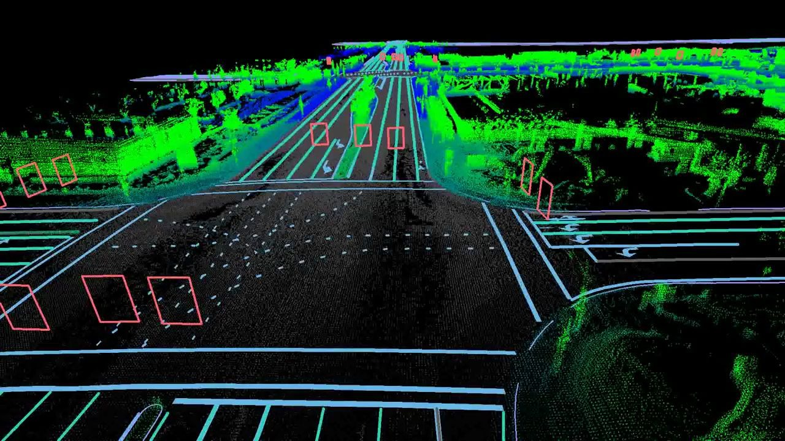
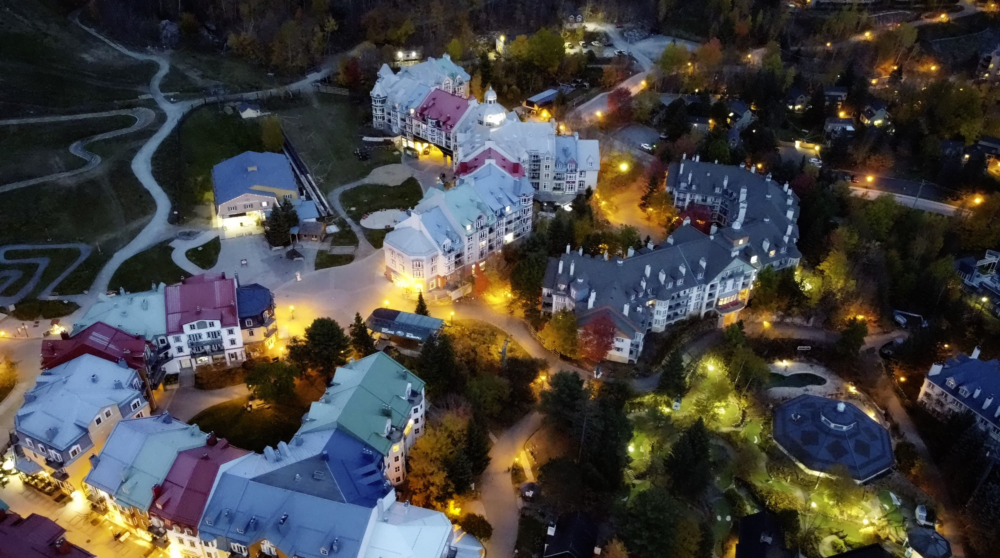

Forschung
World Models, 4D Occupancy, LiDAR und nationale Wahrnehmung

World Models, 4D Occupancy, LiDAR und nationale Wahrnehmung
NeurIPS · CVPR (under review) · IROS Oral · ICRA Oral / RA-L

Licht, Straßen, gelegentlich Stille

Beethovens Neunte gewinnt noch immer

Ein langfristiges Projekt in Jiaodong
zeping.zhang@uottawa.ca · Ottawa, ON
FreeOcc — Decoupling Ego-Motion for Efficient 4D Occupancy Forecasting via Continuous Flow Matching. NeurIPS 2026. arXiv
GATS — Geometry-Aware Token Selection for Efficient Sparse Latent World Models. CVPR 2027, under review.
UFMF — Radar-Guided Kinematic Priors for Real-Time 4D Occupancy Forecasting (ultra-schneller SSM-Kern, 122 FPS). CVPR 2027, under review.
Physics-Aware Diffusion for LiDAR Densification. IROS 2026 Oral.
Use Your Imagination — A Detector-Independent LiDAR Quality Booster. ICRA 2024 Oral & IEEE RA-L.
Hallo.
Zhang ist Ph.D.-Kandidat in KI an der University of Ottawa (VIVA Lab), voraussichtlich Abschluss um April 2027.
Er baut physics-informed World Models fürs autonome Fahren—und für die schwierigere Frage, wie Fahrzeug-Sensoren, Satelliten und Schiene gemeinsam helfen können, Städte vorauszusehen.
Er ist Researcher am National Research Council Canada (NRC). Aktuell: FreeOcc (NeurIPS 2026), zwei CVPR-2027-Einreichungen (GATS, UFMF), IROS-2026-Oral zur physikbewussten LiDAR-Verdichtung sowie Lunar-ODNet mit MDA Space für Kanadas Mondrover.
Davor: M.A.Sc. an der uOttawa (ICRA 2024 Oral & RA-L), Data Scientist (LLM) bei Flipboard in Peking, Kooperationen mit NXP, LeddarTech, Sensor Cortek und Synopsys. B.Sc. an der Nanjing University.
Er arbeitet auch mit generativer KI und multimodalen LLMs—Fine-Tuning, RAG, Kompression von Modellhistorie mit kleinen Modellen und LLM-gestützte Forschungsworkflows. World Models lesen den Raum; große Modelle den Rest.
Neben der Tastatur: Orchestermusik, Offroad, Wandern, Langlauf. Kanadisch zertifizierter Pilot. Englisch, Jiaodong-Mandarin, Mandarin; Deutsch (Grundkenntnisse).